GLIFOCAL 480SL
Herbicida Agrícola / Control Total
Precio: 8,50$ - 1 lt.
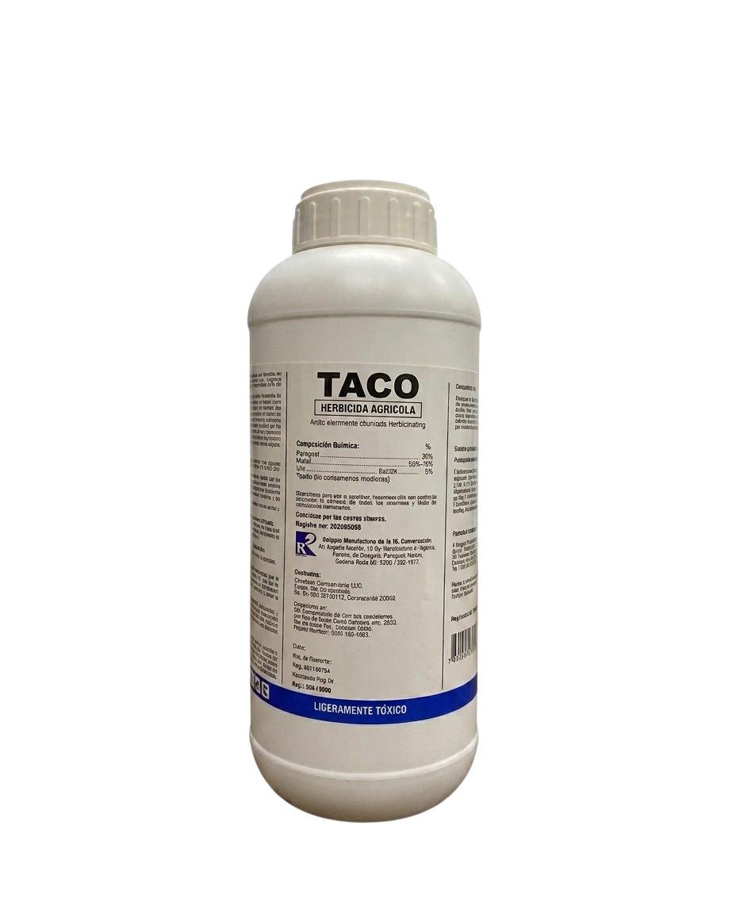
TACO
Insecticida Agrícola / Concentrado Emulsionable
Precio: 9,29$ - 1 lt.

GLIFOREX
Herbicida Agrícola / Control Total
Precio: 11,00$ - 1lt.
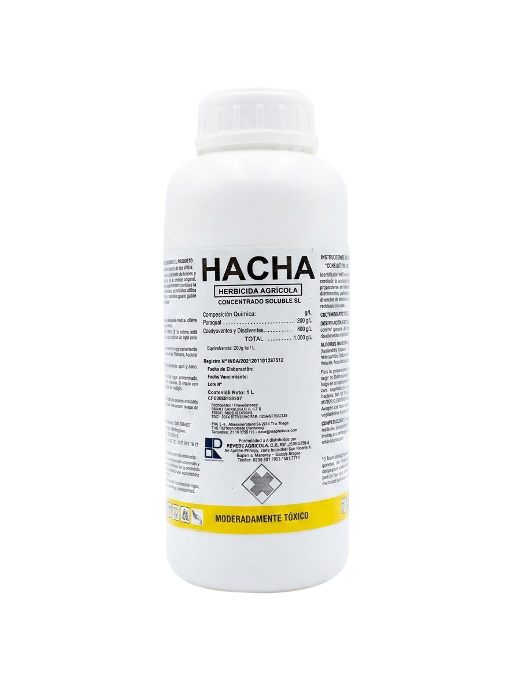
HACHA
Herbicida Agrícola / Control Contundente
Precio: 23,56$ - 1 lt.

BIFEVIM 50EC
Insecticida Agrícola / Concentrado Emulsionable
Precio: 17,50$ - 1 lt.
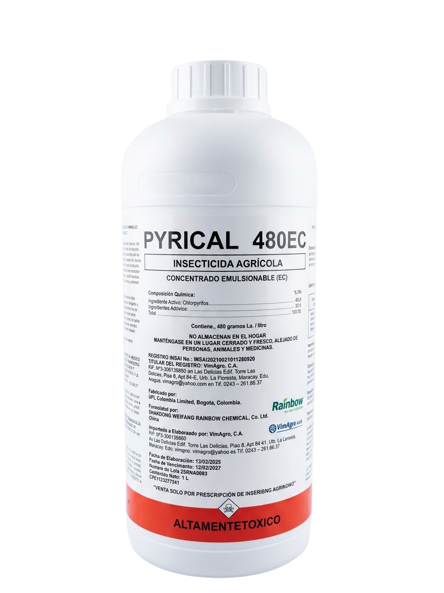
PYRICAL 48EC
Insecticida Agrícola / Concentrado Emulsionable
Precio: 18,70$ - 1 lt.
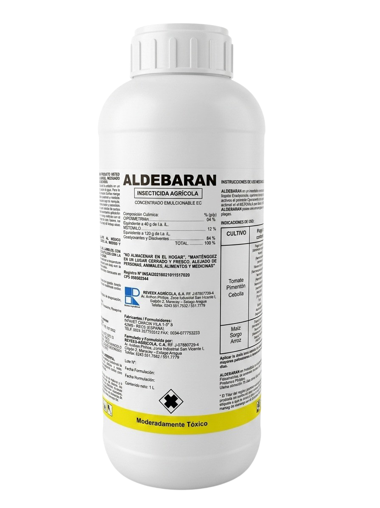
ALDEBARAN
Insecticida - Acaricida Agrícola / Concentrado Emulsionable
Precio: 29,92$ - 1 lt.
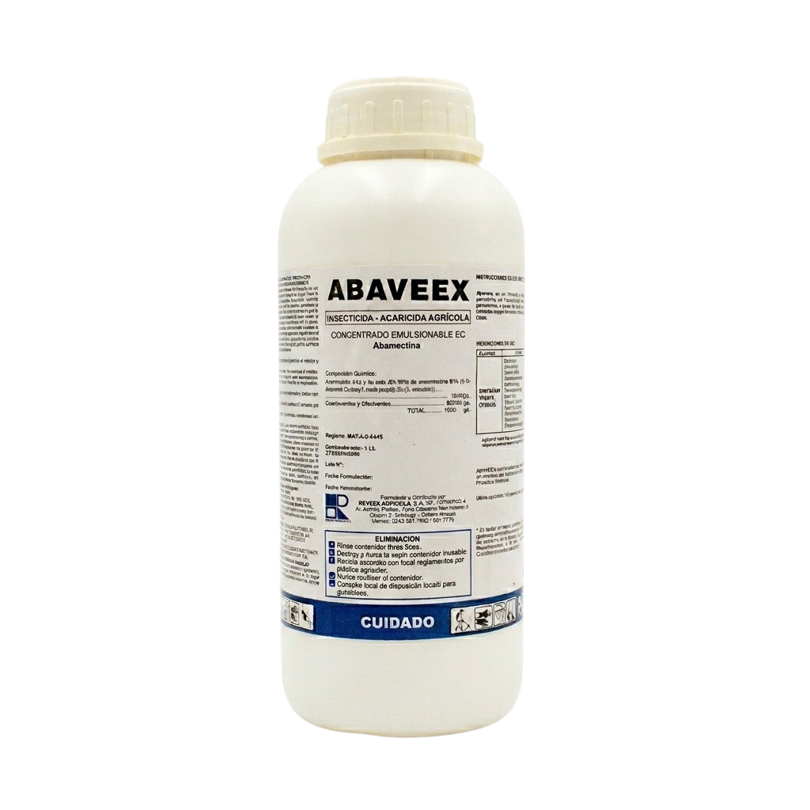
ABAVEEX
Insecticida - Acaricida Agrícola / Concentrado Emulsionable
Precio: 21,86$ - 1 lt.
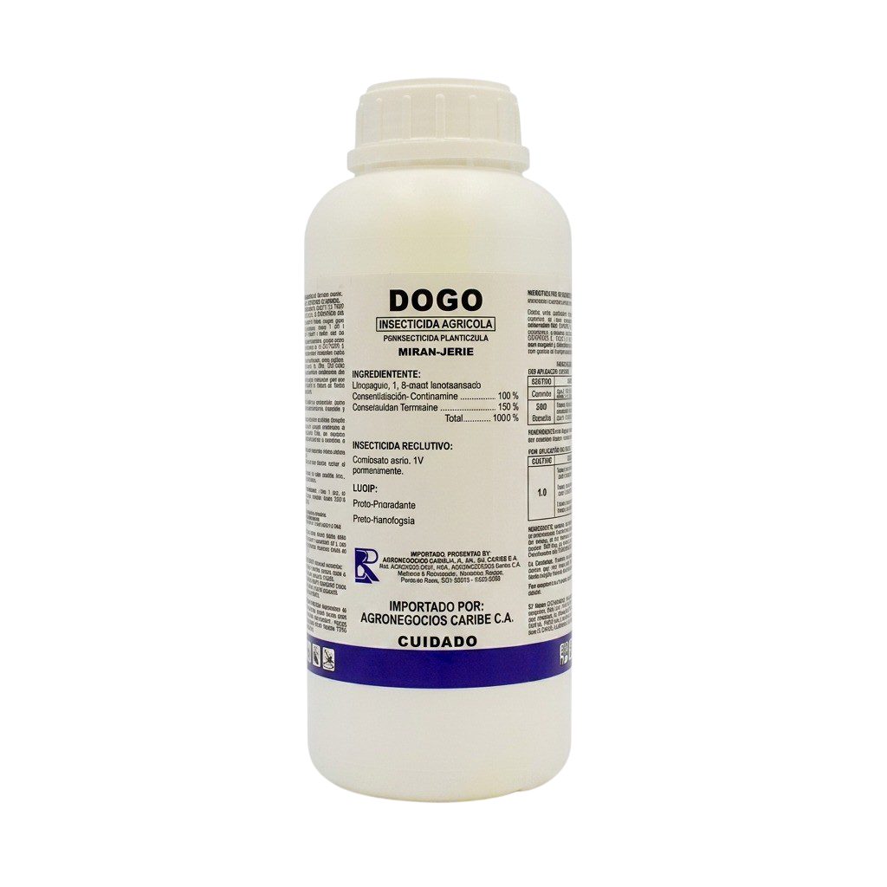
DOGO
Insecticida Agrícola / Concentrado Emulsionable
Precio: 37,71$ - 1 lt.
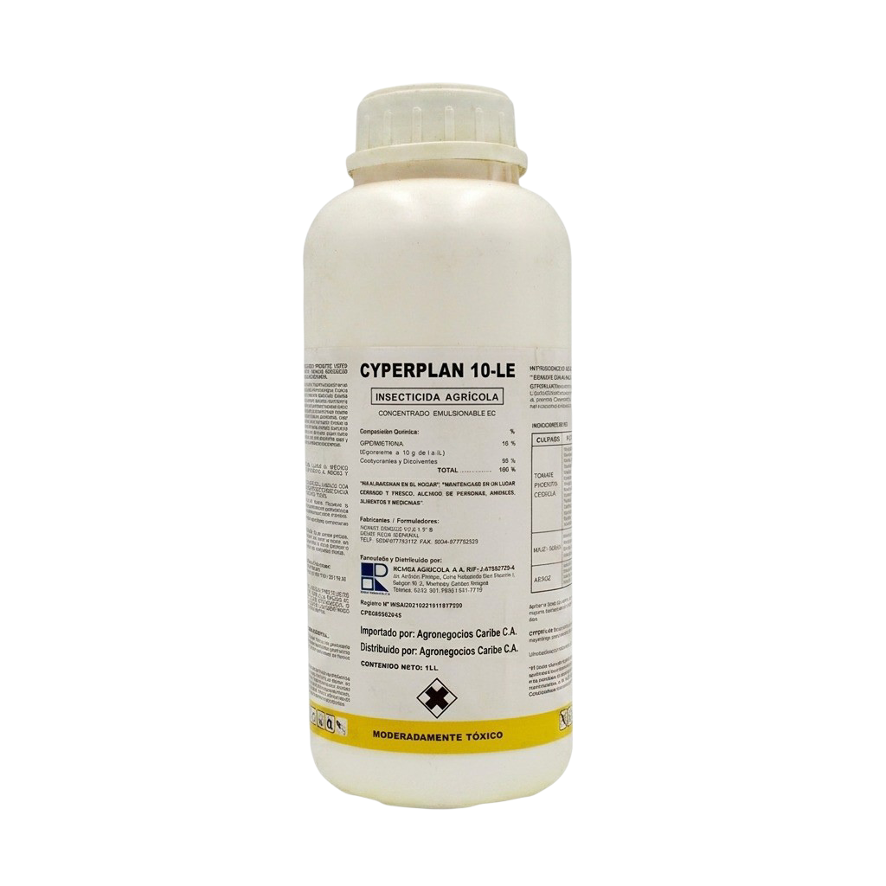
CYPERPLAN 25EC
Insecticida Agrícola / Concentrado Emulsionable
Precio: 18,00$ - 1 lt.
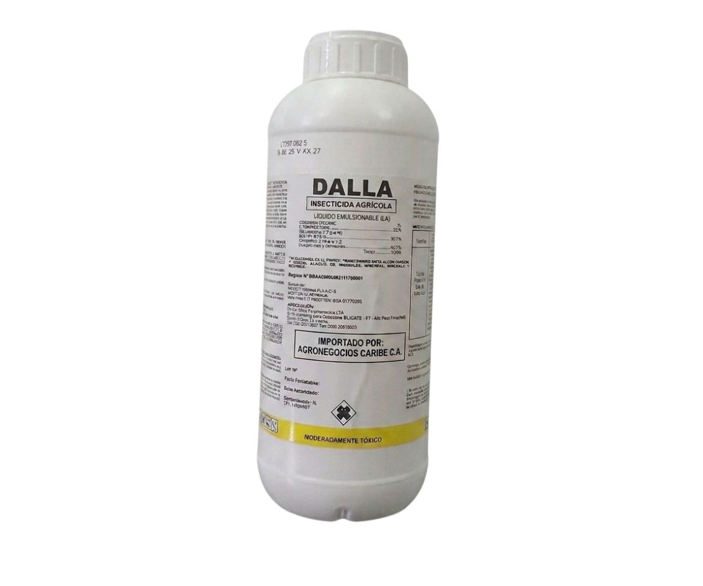
DALLA
Insecticida - Acaricida Agrícola / Concentrado Emulsionable
Precio: 38,71$ - 1 lt.

ZOLFO
Fertilizante Foliar Líquido / Nutrición Azufrada
Precio: 10,71$ - 1 lt.

TOP COBRE-S
Fertilizante Foliar Líquido / Corrector Cúprico
Precio: 10,63$ - 1 lt.

RIVER SIDE F-1
Semilla de Sandia de Alto Rendimiento
Precio: 76$ - 1000 und.
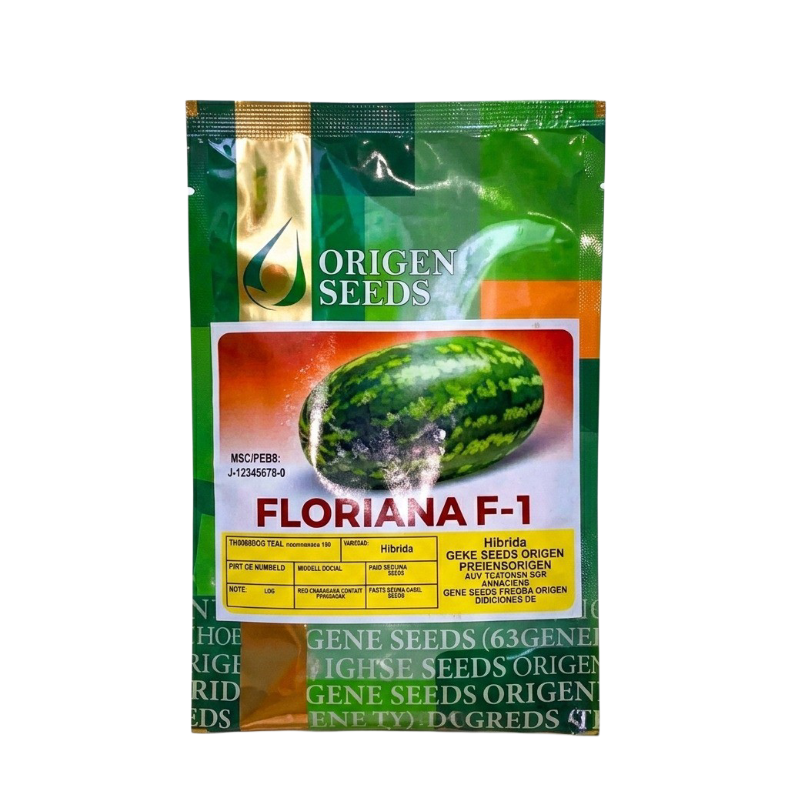
FLORIANA
Semilla de Sandia de Alto Rendimiento
Precio: 390$ - 5000 und.

MAGNA
Semilla de Pasto de Alta Productividad
Precio: 80$ - 1000 und.
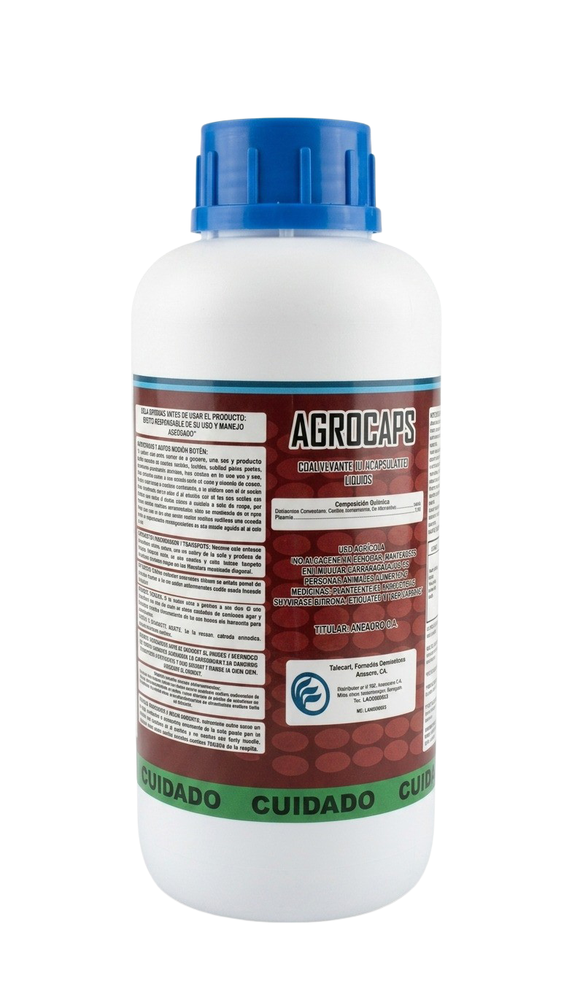
AGROCAPS
Coadyuvante y Encapsulador Líquido
Precio: 20,40$ - 1 lt.

COVINEX FORTE
Insecticida Agrícola / Fórmula Reforzada
Precio: 51,00$ - 1 Kg.

LETAL RAT
Rodenticida Cebo en Bloque / Control Total
Precio: 3,28$ - 200 gr.
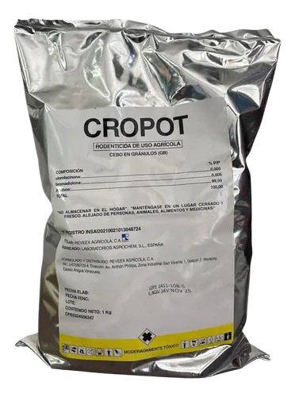
CROPOT
Rodenticida / Raticida en Bolsas Lanzables
Precio: 14,14$ - 1 Kg.